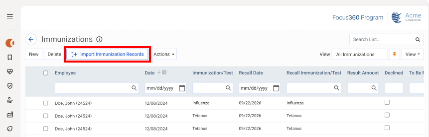
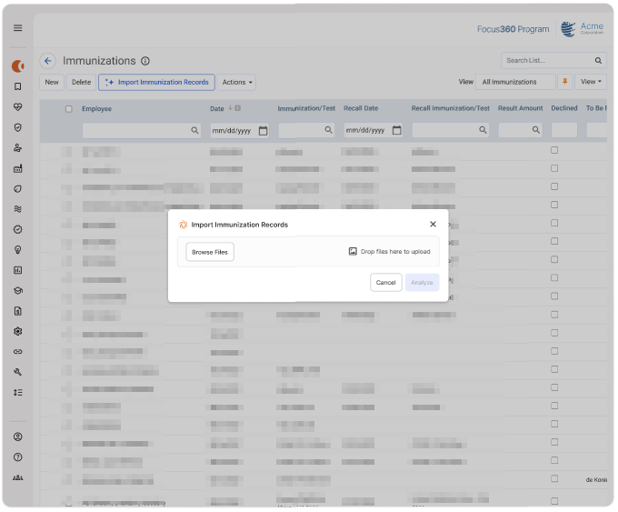
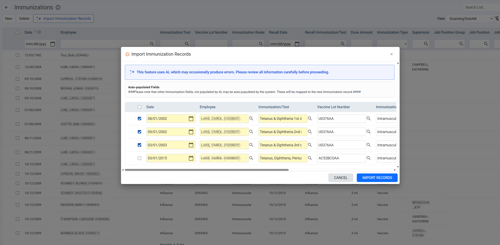

The Vaccination Record Scanning Agent helps users quickly create immunization records by analyzing uploaded immunization documents and automatically populating immunization fields with information extracted from those documents.
The agent can process:
After the document is analyzed, the agent displays the extracted information in a review screen where you can verify, edit, and save the results before records are created.
The Vaccination Record Scanning agent is available only in Core (GX2) and is not supported in myCority.
To use the Vaccination Record Scanning Agent:
Users without the required permissions will not see the AI Import button.

The Import button is only available from the list view and is not available on individual vaccination records.

After analysis is complete, a review window opens displaying the information extracted from the document.
